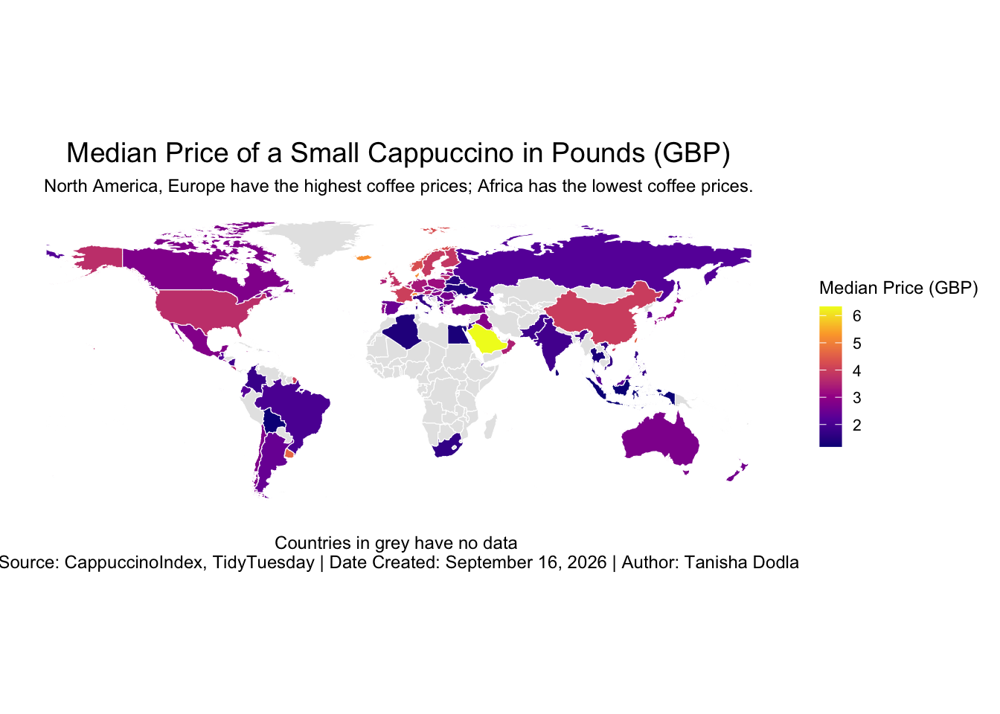
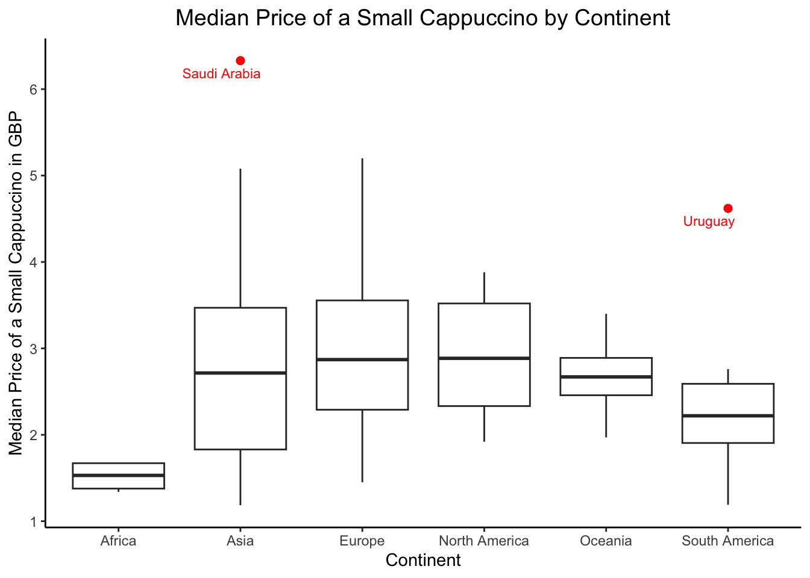
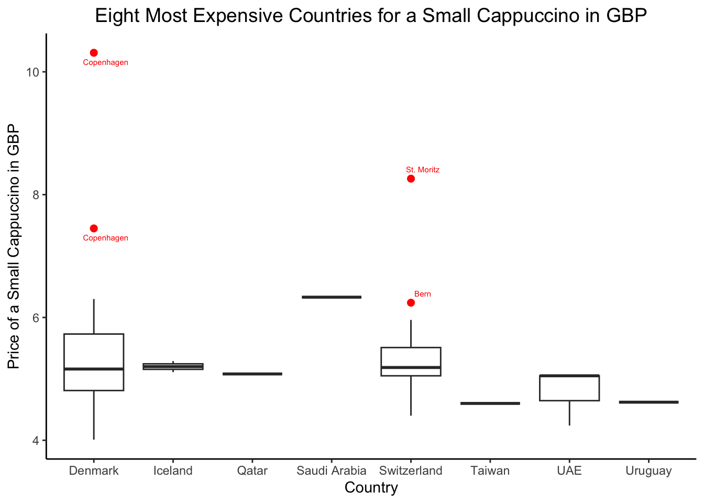
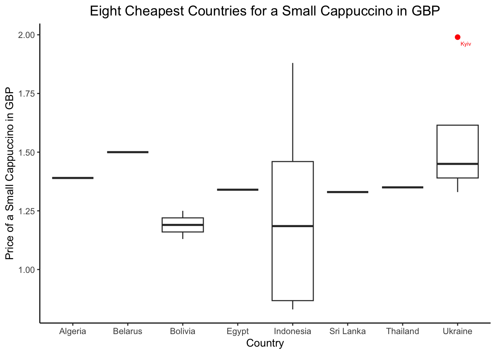
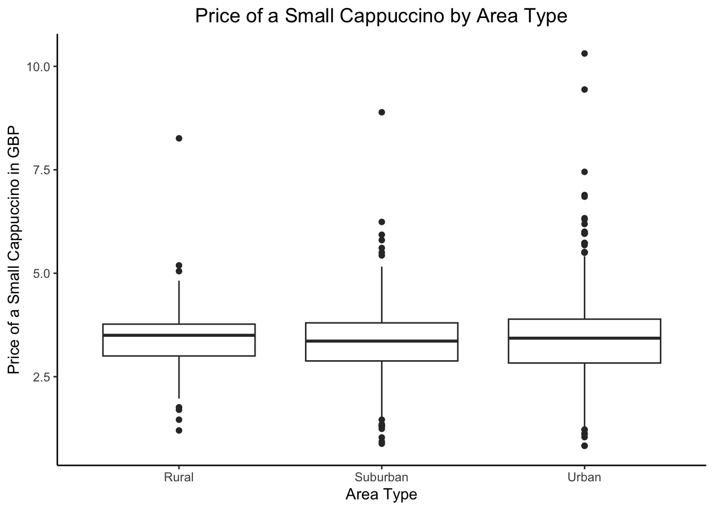

Explore the week’s TidyTuesday challenge. Develop a research question, then answer it through a short data story mainly composed of effective visualizations. Provide sufficient background for readers to grasp your narrative. Refer to the Homework Instructions ⭐ page on the course website for details on how to submit this part.
Code
# Load packageslibrary(tidytuesdayR)library(ggplot2)library(dplyr)library(leaflet)library(sf)library(rnaturalearth)library(ggrepel)#Load datatuesdata <- tidytuesdayR::tt_load('2026-09-08')cafe <- tuesdata$cafecappuccino_index <- tuesdata$cappuccino_index# Replace the non-breaking spaces in `country`cafe$country <-gsub("\u00a0", " ", cafe$country)cappuccino_index$country <-gsub("\u00a0", " ", cappuccino_index$country)#Merge the data coffee =left_join(cafe, cappuccino_index, by="country")#Rename USA to United States of America, UK to United Kingdomcoffee$country[coffee$country =="USA"] ="United States of America"coffee$country[coffee$country =="UK"] ="United Kingdom"
Variability of Coffee Prices: Globally and Locally
The price of coffee varies widely globally. The world map below displays the median price of a small cappuccino in GBP (Great Britian Pounds) in countries where data is available. From the graph, European and North American countries seem to have higher median prices for a small cappuccino. Saudi Arabia seems to have the highest median price for a coffee, and Bolivia seems to have the lowest median price for a coffee.
View World Map Code
#Get the mean and median coffee price aggs = coffee%>%group_by(country)%>%summarize(median_price =median(price_gbp))#Create a choropleth mapworld_map <-ne_countries(scale ="medium", returnclass ="sf")%>%filter(name !="Antarctica")map_data_merged <- world_map %>%left_join(aggs, by =c("name"="country"))ggplot(data = map_data_merged) +geom_sf(aes(fill = median_price), color ="white", size =0.2) +scale_fill_viridis_c(option ="plasma",na.value ="grey90" ) +theme_classic() +labs(x =NULL, title ="Median Price of a Small Cappuccino in Pounds (GBP)",fill ="Median Price (GBP)",subtitle ="North America, Europe have the highest coffee prices; Africa has the lowest coffee prices.",alt ="This World Map shows the median price of a small cappuccino in GBP by country. Saudi Arabia has the highest median price. Europe and North America seem to have higher coffee prices in general.", caption ="Countries in grey have no data \nSource: CappuccinoIndex, TidyTuesday | Date Created: September 16, 2026 | Author: Tanisha Dodla" ) +theme(plot.title =element_text(hjust =0.5,size =14 ),legend.title =element_text(size =9),legend.text =element_text(size =8),legend.key.height =unit(0.5, "cm"),legend.key.width =unit(0.4, "cm"),plot.caption =element_text(hjust =0.5,size =9 ), plot.subtitle =element_text(hjust =0.5,size =9 ), axis.line =element_blank(),axis.ticks =element_blank(),axis.text =element_blank(),axis.title =element_blank() )

We can explore this more empirically using a boxplot, where we look at the median price of a small cappuccino in GBP by continent. The boxplot below affirms that North America and Europe have the highest median cofee prices, and Asia and Europe have the most variation in prices (at the country level). Africa and Oceania have the least variation in coffee prices. Africa also has the lowest median coffee price. It is true that Saudi Arabia has the highest coffee price - which we saw from the world map. However, it seems like Africa has the lowest median coffee prices.
View Boxplot 1 Code
# Recode seven seas and oceania, remove antarcticaplot_data <- map_data_merged %>%filter(continent !="Antarctica") %>%mutate(continent =ifelse( continent %in%c("Oceania", "Seven seas (open ocean)"),"Oceania", continent ) )# Identify outliersoutliers <- plot_data %>%group_by(continent) %>%mutate(Q1 =quantile(median_price, 0.25, na.rm =TRUE),Q3 =quantile(median_price, 0.75, na.rm =TRUE),IQR = Q3 - Q1,lower = Q1 -1.5* IQR,upper = Q3 +1.5* IQR ) %>%filter(median_price < lower | median_price > upper) %>%ungroup()# Boxplotggplot(plot_data, aes(x = continent, y = median_price)) +geom_boxplot(outlier.shape =NA ) +geom_point(data = outliers,aes(x = continent, y = median_price),color ="red",size =2 ) +geom_text_repel(data = outliers,aes(x = continent,y = median_price,label = name ),size =3,color ="red" ) +theme_classic() +labs(x ="Continent",y ="Median Price of a Small Cappuccino in GBP",title ="Median Price of a Small Cappuccino by Continent", alt ="A Boxplot showing the Median Price of a Small Cappuccino by Continent in GBP. Asia and Europe have the most variation in median coffee prices. Europe and North America have the highest median prices. Saudi Arabia has the highest median cappuccino price, just over 6 pounds for a small coffee." ) +theme(plot.title =element_text(hjust =0.5,size =14 ) )

We can look at within-country variability of coffee prices as well. The figures below show that Denmark and Switzerland have very large outliers, and they mostly seem to be contained in large metro cities or their capital cities. This is the case with Ukraine as well. Indonesia has the largest within-country coffee price variation in these sixteen countries we are looking at.
View Boxplot 2 Code
top_10 = coffee %>%group_by(country) %>%summarize(median_price =median(price_gbp, na.rm =TRUE)) %>%arrange(desc(median_price)) %>%slice_head(n =8)# Identify outliers in the top countriestop_outliers <- coffee %>%filter(country %in% top_10$country) %>%group_by(country) %>%mutate(Q1 =quantile(price_gbp, 0.25, na.rm =TRUE),Q3 =quantile(price_gbp, 0.75, na.rm =TRUE),IQR = Q3 - Q1,is_outlier = price_gbp < Q1 -1.5* IQR | price_gbp > Q3 +1.5* IQR ) %>%filter(is_outlier) %>%ungroup()ggplot( coffee %>%filter(country %in% top_10$country),aes(x = country, y = price_gbp)) +geom_boxplot() +# Red outlier pointsgeom_point(data = top_outliers,color ="red",size =2 ) +# Red city labelsgeom_text_repel(data = top_outliers,aes(label = city),color ="red", size =2,nudge_x =0.15,direction ="y" ) +theme_classic() +labs(x ="Country",y ="Price of a Small Cappuccino in GBP",title ="Eight Most Expensive Countries for a Small Cappuccino in GBP" )+theme(plot.title =element_text(hjust =0.5,size =14 ))

View Boxplot 3 Code
bottom_10 = coffee%>%group_by(country)%>%summarize(median_price=median(price_gbp, na.rm=TRUE))%>%arrange(median_price)%>%slice_head(n =8)bottom_outliers <- coffee %>%filter(country %in% bottom_10$country) %>%group_by(country) %>%mutate(Q1 =quantile(price_gbp, 0.25, na.rm =TRUE),Q3 =quantile(price_gbp, 0.75, na.rm =TRUE),IQR = Q3 - Q1,is_outlier = price_gbp < Q1 -1.5* IQR | price_gbp > Q3 +1.5* IQR ) %>%filter(is_outlier) %>%ungroup()ggplot( coffee %>%filter(country %in% bottom_10$country),aes(x = country, y = price_gbp)) +geom_boxplot() +geom_point(data = bottom_outliers,color ="red",size =2 ) +geom_text_repel(data = bottom_outliers,aes(label = city),color ="red",nudge_x =0.15,direction ="y", size =2, ) +theme_classic() +labs(x ="Country",y ="Price of a Small Cappuccino in GBP",title ="Eight Cheapest Countries for a Small Cappuccino in GBP" )+theme(plot.title =element_text(hjust =0.5,size =14 ))

Finally, there is variation by location type. From the figure below, the median price of a small cappuccino seems to be the same if the coffee shop is rural, suburban, or urban. However, there is a lot more variability in urban coffee shops: the range of prices that are charged in small coffee shops is a lot larger, and can exceed 10 pounds. This variability still exists for suburban coffee shops, but the range does not go as high up as urban coffee shops. Rural coffee shops have a smaller range - the price starts higher and ends lower.
View Boxplot 4 Code
#Create an area type variable coffee <- coffee %>%mutate(area_type =case_when( urban ==1~"Urban", suburban ==1~"Suburban", rural ==1~"Rural",TRUE~NA_character_))#Coffee prices by area type ggplot(coffee, aes(x=area_type, y = price_gbp))+geom_boxplot()+theme_classic()+labs(x="Area Type", y ="Price of a Small Cappuccino in GBP", title ="Price of a Small Cappuccino by Area Type")+theme(plot.title =element_text(hjust =0.5,size =14))

Source Code
---title: "Homework 01"---## TidyTuesday PartExplore the week's [TidyTuesday](https://github.com/rfordatascience/tidytuesday) challenge. Develop a research question, then answer it through a short data story mainly composed of [effective visualizations]({{< var effective-viz-url >}}). Provide sufficient background for readers to grasp your narrative. Refer to the Homework Instructions ⭐ page on the course website for details on how to submit this part.```{r, warning=FALSE, warning=FALSE}# Load packageslibrary(tidytuesdayR)library(ggplot2)library(dplyr)library(leaflet)library(sf)library(rnaturalearth)library(ggrepel)#Load datatuesdata <- tidytuesdayR::tt_load('2026-09-08')cafe <- tuesdata$cafecappuccino_index <- tuesdata$cappuccino_index# Replace the non-breaking spaces in `country`cafe$country <- gsub("\u00a0", " ", cafe$country)cappuccino_index$country <- gsub("\u00a0", " ", cappuccino_index$country)#Merge the data coffee = left_join(cafe, cappuccino_index, by="country")#Rename USA to United States of America, UK to United Kingdomcoffee$country[coffee$country == "USA"] = "United States of America"coffee$country[coffee$country == "UK"] = "United Kingdom"```### Variability of Coffee Prices: Globally and LocallyThe price of coffee varies widely globally. The world map below displays the median price of a small cappuccino in GBP (Great Britian Pounds) in countries where data is available. From the graph, European and North American countries seem to have higher median prices for a small cappuccino. Saudi Arabia seems to have the highest median price for a coffee, and Bolivia seems to have the lowest median price for a coffee.```{r, warning=FALSE, width = 10}#| code-fold: true#| code-summary: "View World Map Code"#Get the mean and median coffee price aggs = coffee%>% group_by(country)%>% summarize(median_price = median(price_gbp))#Create a choropleth mapworld_map <- ne_countries(scale = "medium", returnclass = "sf")%>% filter(name != "Antarctica")map_data_merged <- world_map %>% left_join(aggs, by = c("name" = "country"))ggplot(data = map_data_merged) + geom_sf(aes(fill = median_price), color = "white", size = 0.2) + scale_fill_viridis_c( option = "plasma", na.value = "grey90" ) + theme_classic() + labs( x = NULL, title = "Median Price of a Small Cappuccino in Pounds (GBP)", fill = "Median Price (GBP)", subtitle = "North America, Europe have the highest coffee prices; Africa has the lowest coffee prices.", alt = "This World Map shows the median price of a small cappuccino in GBP by country. Saudi Arabia has the highest median price. Europe and North America seem to have higher coffee prices in general.", caption = "Countries in grey have no data \nSource: CappuccinoIndex, TidyTuesday | Date Created: September 16, 2026 | Author: Tanisha Dodla" ) + theme( plot.title = element_text( hjust = 0.5, size = 14 ), legend.title = element_text(size = 9), legend.text = element_text(size = 8), legend.key.height = unit(0.5, "cm"), legend.key.width = unit(0.4, "cm"), plot.caption = element_text( hjust = 0.5, size = 9 ), plot.subtitle = element_text( hjust = 0.5, size = 9 ), axis.line = element_blank(), axis.ticks = element_blank(), axis.text = element_blank(), axis.title = element_blank() )```We can explore this more empirically using a boxplot, where we look at the median price of a small cappuccino in GBP by continent. The boxplot below affirms that North America and Europe have the highest median cofee prices, and Asia and Europe have the most variation in prices (at the country level). Africa and Oceania have the least variation in coffee prices. Africa also has the lowest median coffee price. It is true that Saudi Arabia has the highest coffee price - which we saw from the world map. However, it seems like Africa has the lowest median coffee prices. ```{r, warning=FALSE}#| code-fold: true#| code-summary: "View Boxplot 1 Code"# Recode seven seas and oceania, remove antarcticaplot_data <- map_data_merged %>% filter(continent != "Antarctica") %>% mutate( continent = ifelse( continent %in% c("Oceania", "Seven seas (open ocean)"), "Oceania", continent ) )# Identify outliersoutliers <- plot_data %>% group_by(continent) %>% mutate( Q1 = quantile(median_price, 0.25, na.rm = TRUE), Q3 = quantile(median_price, 0.75, na.rm = TRUE), IQR = Q3 - Q1, lower = Q1 - 1.5 * IQR, upper = Q3 + 1.5 * IQR ) %>% filter(median_price < lower | median_price > upper) %>% ungroup()# Boxplotggplot(plot_data, aes(x = continent, y = median_price)) + geom_boxplot( outlier.shape = NA ) + geom_point( data = outliers, aes(x = continent, y = median_price), color = "red", size = 2 ) + geom_text_repel( data = outliers, aes( x = continent, y = median_price, label = name ), size = 3, color = "red" ) + theme_classic() + labs( x = "Continent", y = "Median Price of a Small Cappuccino in GBP", title = "Median Price of a Small Cappuccino by Continent", alt = "A Boxplot showing the Median Price of a Small Cappuccino by Continent in GBP. Asia and Europe have the most variation in median coffee prices. Europe and North America have the highest median prices. Saudi Arabia has the highest median cappuccino price, just over 6 pounds for a small coffee." ) + theme( plot.title = element_text( hjust = 0.5, size = 14 ) )```We can look at within-country variability of coffee prices as well. The figures below show that Denmark and Switzerland have very large outliers, and they mostly seem to be contained in large metro cities or their capital cities. This is the case with Ukraine as well. Indonesia has the largest within-country coffee price variation in these sixteen countries we are looking at. ```{r, warning=FALSE}#| code-fold: true#| code-summary: "View Boxplot 2 Code"top_10 = coffee %>% group_by(country) %>% summarize(median_price = median(price_gbp, na.rm = TRUE)) %>% arrange(desc(median_price)) %>% slice_head(n = 8)# Identify outliers in the top countriestop_outliers <- coffee %>% filter(country %in% top_10$country) %>% group_by(country) %>% mutate( Q1 = quantile(price_gbp, 0.25, na.rm = TRUE), Q3 = quantile(price_gbp, 0.75, na.rm = TRUE), IQR = Q3 - Q1, is_outlier = price_gbp < Q1 - 1.5 * IQR | price_gbp > Q3 + 1.5 * IQR ) %>% filter(is_outlier) %>% ungroup()ggplot( coffee %>% filter(country %in% top_10$country), aes(x = country, y = price_gbp)) + geom_boxplot() + # Red outlier points geom_point( data = top_outliers, color = "red", size = 2 ) + # Red city labels geom_text_repel( data = top_outliers, aes(label = city), color = "red", size = 2, nudge_x = 0.15, direction = "y" ) + theme_classic() + labs( x = "Country", y = "Price of a Small Cappuccino in GBP", title = "Eight Most Expensive Countries for a Small Cappuccino in GBP" )+ theme( plot.title = element_text( hjust = 0.5, size = 14 ))``````{r, warning=FALSE}#| code-fold: true#| code-summary: "View Boxplot 3 Code"bottom_10 = coffee%>% group_by(country)%>% summarize(median_price=median(price_gbp, na.rm=TRUE))%>% arrange(median_price)%>% slice_head(n = 8)bottom_outliers <- coffee %>% filter(country %in% bottom_10$country) %>% group_by(country) %>% mutate( Q1 = quantile(price_gbp, 0.25, na.rm = TRUE), Q3 = quantile(price_gbp, 0.75, na.rm = TRUE), IQR = Q3 - Q1, is_outlier = price_gbp < Q1 - 1.5 * IQR | price_gbp > Q3 + 1.5 * IQR ) %>% filter(is_outlier) %>% ungroup()ggplot( coffee %>% filter(country %in% bottom_10$country), aes(x = country, y = price_gbp)) + geom_boxplot() + geom_point( data = bottom_outliers, color = "red", size = 2 ) + geom_text_repel( data = bottom_outliers, aes(label = city), color = "red", nudge_x = 0.15, direction = "y", size = 2, ) + theme_classic() + labs( x = "Country", y = "Price of a Small Cappuccino in GBP", title = "Eight Cheapest Countries for a Small Cappuccino in GBP" )+ theme( plot.title = element_text( hjust = 0.5, size = 14 ))```Finally, there is variation by location type. From the figure below, the median price of a small cappuccino seems to be the same if the coffee shop is rural, suburban, or urban. However, there is a lot more variability in urban coffee shops: the range of prices that are charged in small coffee shops is a lot larger, and can exceed 10 pounds. This variability still exists for suburban coffee shops, but the range does not go as high up as urban coffee shops. Rural coffee shops have a smaller range - the price starts higher and ends lower. ```{r, warning=FALSE}#| code-fold: true#| code-summary: "View Boxplot 4 Code"#Create an area type variable coffee <- coffee %>% mutate(area_type = case_when( urban == 1 ~ "Urban", suburban == 1 ~ "Suburban", rural == 1 ~ "Rural", TRUE ~ NA_character_))#Coffee prices by area type ggplot(coffee, aes(x=area_type, y = price_gbp))+ geom_boxplot()+ theme_classic()+ labs(x= "Area Type", y = "Price of a Small Cappuccino in GBP", title = "Price of a Small Cappuccino by Area Type")+ theme(plot.title = element_text(hjust = 0.5,size = 14))```